Электромагнит для
получения переменного однородного магнитного
поля с индукцией до 0.3 Тл в зазоре сечением 60 х 60 кв. мм высотой 20 мм
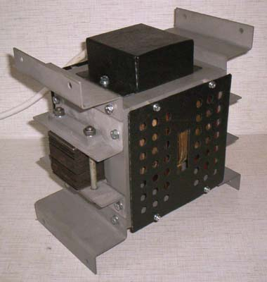
1. Назначение
Электромагнит изначально рассчитан и сконструирован для получения переменного однородного магнитного поля с возможностью регулировки по величине индукции посредством изменения тока в обмотках и по частоте, но может также использоваться и для получения постоянного магнитного поля или работать в импульсном режиме [19]. Сферы применения: исследование магнитных свойств веществ в переменном или постоянном магнитном поле при работе в составе магнитометров [12], намагничивание и размагничивание постоянных магнитов (в импульсном режиме) [16], размагничивание стальных образцов переменным магнитным полем с затухающей амплитудой [17], калибровка приборов для измерения магнитных полей [12] и измерительных катушек [8], проведение экспериментов, требующих применения переменного магнитного поля, и т. п.
2. Конструкция
При конструировании электромагнита использовался опыт предыдущей разработки [18]. Для изготовления ярма электромагнита применена сплошная малоуглеродистая сталь. Это позволило повысить технологичность и снизить трудоемкость изготовления конструкции при несущественном проигрыше в параметрах. Магнитная система (ярмо) состоит из четырех плит из сплошной малоуглеродистой стали: верхняя, нижняя и две боковых (рис. 2.1). Сердечники катушек для улучшения характеристик переменного магнитного поля в рабочем зазоре изготовлены из электротехнической стали. Каждый из сердечников представляет из себя пакет, набранный из отдельных листов. Сердечники крепятся к боковым плитам ярма. На сердечники надеты прямоугольные катушки, намотанные медным проводом. Между катушками вставлены немагнитные распорки. Конструкция устанавливается на опорные уголки в горизонтальном или вертикальном положении (рис. 2.2, 2.3), чтобы обеспечить удобство в работе. На верхней плите ярма крепится закрываемая крышкой клеммная коробка, посредством которой выводы катушек подключаются к питающему кабелю.
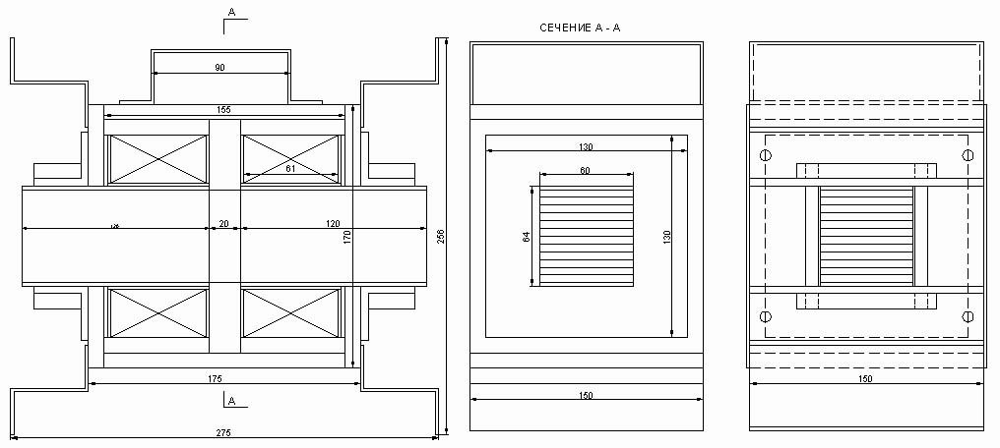
Рис. 2.1. Конструкция электромагнита переменного тока (эскиз).
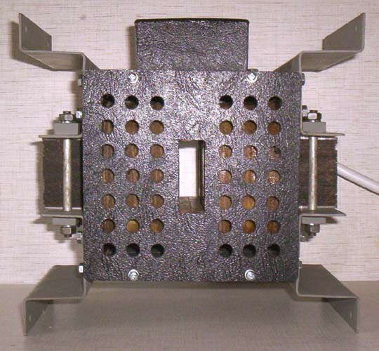
Рис. 2.2. Горизонтальная установка электромагнита переменного тока.
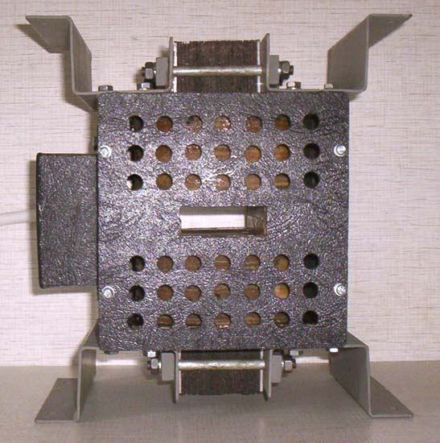
Рис. 2.3. Вертикальная установка электромагнита переменного тока.
3. Расчеты
Расчет прямоугольных катушек электромагнита (число витков и активное сопротивление) был выполнен с помощью программы Rectangular Coil [13]. Результат расчета числа витков и активного сопротивления одной катушки приведен на рис. 3.1.
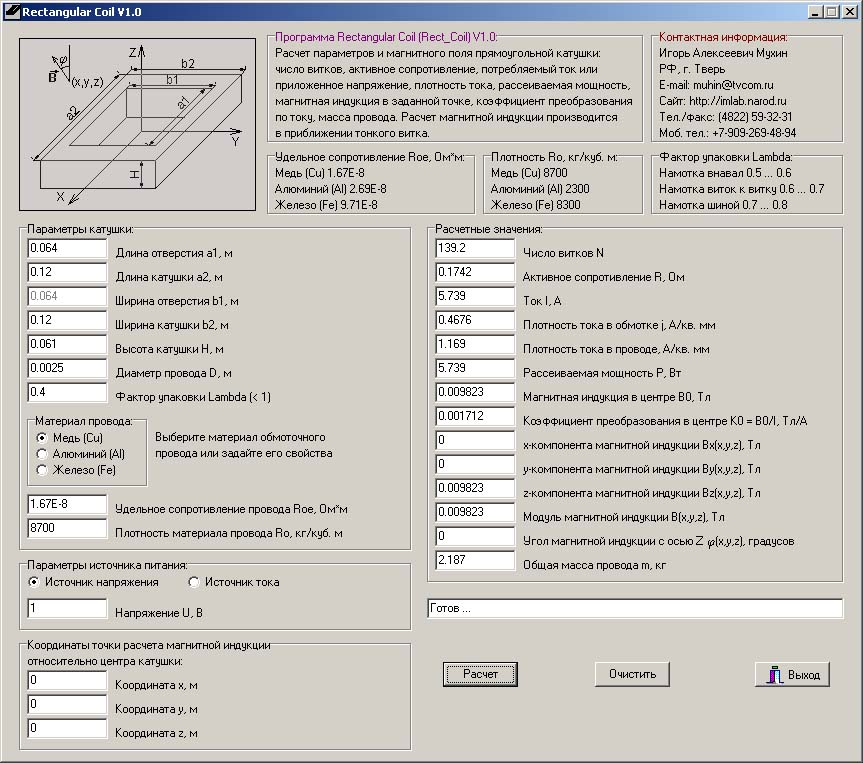
Рис. 3.1. Расчет прямоугольной катушки электромагнита (число витков и активное сопротивление) с помощью программы Rectangular Coil [13] (число витков примерно 140, активное сопротивление примерно 0.17 Ом, остальные расчетные значения не используются).
Расчет магнитной системы электромагнита произведен методом конечных элементов [14] с помощью программы Ansoft Maxwell [1] на постоянном токе. На рис. 3.2 показана расчетная трехмерная модель магнитной системы электромагнита. Целью расчета было нахождение индуктивности обмоток и распределения магнитной индукции в рабочем зазоре при заданном токе питания каждой катушки 8 А. Ток питания (8 А) и число витков (140) определяют МДС катушки, которая в данном случае равна 1120 А ∙ витков.
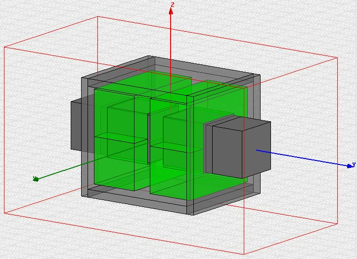
Рис. 3.2. Эскиз расчетной модели электромагнита: стальные детали показаны серым цветом, катушки - зеленым. Площадь сечения сердечников катушек 60 х 60 мм2.
Ярмо электромагнита сделано из стали марки 1010 (Ст10), кривая намагничивания которой показана на рис. 3.3. Аналогичные магнитные свойства приняты и для электротехнической стали, из которой набраны сердечники катушек электромагнита.
Рис. 3.3. Кривая намагничивания стали (марка 1010, Ст10).
Расчетная индуктивность каждой катушки электромагнита на постоянном токе 8 А примерно 11.8 мГн, индуктивность двух параллельно соединенных катушек примерно 8.8 мГн, индуктивность двух последовательно соединенных катушек примерно 35.3 мГн.
Распределение магнитной индукции в рабочем зазоре рассчитывалось по трем линиям (см. рис. 3.4). Результаты расчета представлены на рис. 3.5.
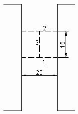
Рис. 3.4. Линии для расчета распределения магнитной индукции в межполюсном зазоре: 1 – в центре зазора от левого сердечника к правому, 2 – на расстоянии 15 мм от центра от левого сердечника к правому, 3 – в середине зазора от его центра к краям.
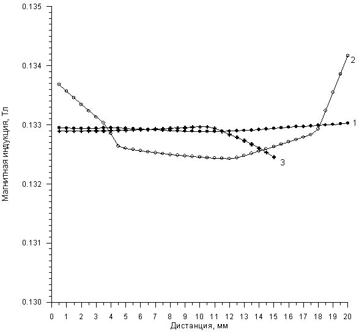
Рис. 3.5. Распределение магнитной индукции в рабочем зазоре электромагнита по линиям 1, 2 (тангенциальная составляющая – вдоль линии) и 3 (нормальная составляющая – поперек линии). Неоднородность не превышает примерно (0.1342 – 0.133)/0.133 ≈ 1 %.
4. Технические характеристики:
Активное сопротивление обмоток электромагнита при их последовательном включении измерено мультиметром APPA-107N и составило 0.35 + 0.02 Ом.
Индуктивность обмоток электромагнита была измерена на переменном токе методом амперметра-вольтметра (рис. 4.1) на частотах 50, 200 и 500 Гц. Последовательно соединенные катушки электромагнита L подключались к выходу усилителя мощности низкой частоты [15] через балластный резистор R1.1R1.2 сопротивлением 10 Ом (точная подстройка осуществлялась с помощью переменного резистора R1.2). На вход усилителя мощности подавался сигнал с выхода генератора Г3-118. С помощью первого канала осциллографа UTD2102CEL-R измерялась амплитуда напряжения на балластном резисторе R1.1R1.2. По ней рассчитывалась амплитуда тока I0 через обмотки электромагнита L. Амплитудное значение напряжения на выводах последовательно включенных обмоток U0 измерялось с помощью второго канала осциллографа. Полное сопротивление обмоток ZL рассчитывалось как отношение амплитудных значений напряжения на обмотках и тока через них, а далее по известному активному сопротивлению R находилась индуктивность электромагнита L с использованием формул:


Рис. 4.1. Схема для измерения индуктивности на переменном токе методом амперметра-вольтметра.
В таблице 4.1 приведены значения измеренной на частотах 50, 100, 200, 500 Гц индуктивности обмоток электромагнита при их последовательном включении.
Таблица 4.1. Индуктивность последовательно включенных обмоток электромагнита на разных частотах.
|
|
Частота f, Гц |
||||
|
50 |
100 |
200 |
500 |
||
|
Последовательное соединение обмоток |
I0, А |
0.8 |
0.8 |
0.8 |
0.6 |
|
U0 , В |
6.4 |
12 |
22 |
36 |
|
|
ZL, Ом |
8.0 |
15.0 |
27.5 |
60.0 |
|
|
R, Ом |
0.35 |
0.35 |
0.35 |
0.35 |
|
|
L, мГн |
25.4 |
23.9 |
21.9 |
19.1 |
|
На рис. 4.2 показан график зависимости индуктивности от частоты измерительного сигнала (индуктивность на частоте 1000 Гц измерена с помощью LC-метра VC6243). С увеличением частоты измерительного напряжения индуктивность уменьшается и наоборот. Сплошной линией показана полиномиальная аппроксимация (степени 2) измеренной индуктивности, которая на нулевой частоте дает оценку индуктивности примерно 26 мГн. Отличие измеренной индуктивности на постоянном токе от рассчитанной (35.3 мГн) может быть связано, во-первых, с существенным отличием измерительного тока (0.8 А) от расчетного (8 А) и, во-вторых, с недостаточно точной аппроксимацией измеренной индуктивности на нулевой частоте.

Рис. 4.2. Зависимость индуктивности электромагнита (последовательное включение обмоток) от частоты измерительного напряжения.
Измерение взаимной зависимости напряжения питания, потребляемого тока и магнитной индукции в рабочем зазоре проводилось по схеме, показанной на рис. 4.3. Обмотки электромагнита ЭМ1 и ЭМ2 соединены последовательно и подключены через амперметр PA1 (цифровой мультиметр DT9205A в режиме амперметра переменного тока с диапазоном 20 А) к выходу регулируемого автотрансформатора (ЛАТР), запитанного от сети переменного тока напряжением 220 В частотой 50 Гц через автоматический выключатель S1 на 25 А. Для измерения выходного напряжения ЛАТРа используется вольтметр PV1 (цифровой мультиметр DT9205A в режиме вольтметра переменного напряжения с диапазоном 750 В или собственный вольтметр ЛАТРа). В центре рабочего зазора электромагнита размещен щуп с датчиком Холла (ДХ) ПХЭ606118В [6] тесламетра [2], имеющего аналоговый выход с коэффициентом преобразования 1 В/Тл. К этому выходу подключен мультиметр APPA-107N, работающий в режиме вольтметра переменного напряжения с диапазоном 2 В. Результаты измерений приведены в таблице 4.2 и на рис. 4.4 - 4.6.
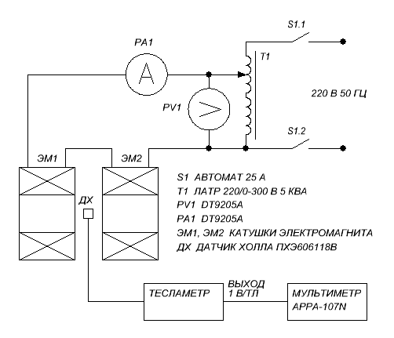
Рис. 4.3. Схема установки для измерения зависимости потребляемого электромагнитом тока от напряжения питания и магнитной индукции в рабочем зазоре от потребляемого тока.
Таблица 4.2. Соотношения между напряжением питания электромагнита, рабочим током, магнитной индукцией в центре зазора (обмотки соединены последовательно, рабочая частота 50 Гц, все значения действующие).
| Рабочее напряжение U, В | 0 | 20 | 40 | 60 | 80 | 100 | 150 |
| Рабочий ток I, А | 0 | 2.08 | 4.16 | 6.26 | 8.34 | 10.77 | 16.44 |
| Магнитная индукция в центре зазора B, Тл | 0 | 0.0238 | 0.0504 | 0.0764 | 0.1023 | 0.1300 | 0.1935 |
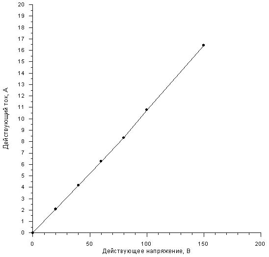
Рис. 4.4. Зависимость величины рабочего тока электромагнита от приложенного напряжения (обмотки соединены последовательно, рабочая частота 50 Гц, значения тока и напряжения действующие).
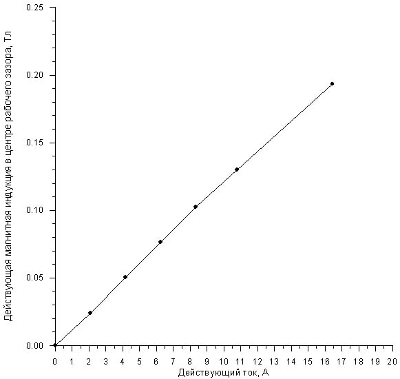
Рис. 4.5. Зависимость магнитной индукции в центре рабочего зазора электромагнита от величины питающего тока (обмотки соединены последовательно, рабочая частота 50 Гц, значения индукции и тока действующие).
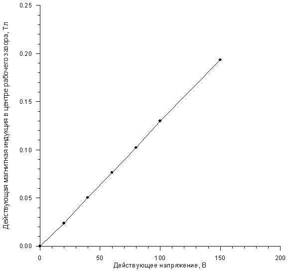
Рис. 4.6. Зависимость магнитной индукции в центре рабочего зазора электромагнита от величины питающего напряжения (обмотки соединены последовательно, рабочая частота 50 Гц, значения индукции и напряжения действующие).
Магнитная индукция, измеренная на переменном токе частотой 50 Гц, примерно на 30 % меньше рассчитанной на постоянном токе такой же величины. Это может быть обусловлено повышением магнитного сопротивления сделанного из сплошной малоуглеродистой стали ярма электромагнита вследствие возбуждаемых в нем вихревых токов.
Измерение распределения магнитного поля в рабочем зазоре электромагнита при питании переменным током частотой 50 Гц проводилось с использованием схемы, показанной на рис. 4.7. Она аналогична схеме, приведенной на рис. 4.3. Щуп с датчиком Холла (ДХ) крепится к измерительной линейке, которая может перемещаться внутри рабочего зазора электромагнита. Нулевое положение датчика соответствует его местонахождению в центре рабочего зазора. При этом сам датчик может иметь некоторое смещение по осевой линии зазора в сторону одного из полюсных наконечников. Отрицательные значения перемещения - датчик выдвигается из зазора, положительные - вдвигается в зазор. При проведении измерений необходимо поддерживать постоянную величину тока в обмотках электромагнита. Результаты измерений приведены в таблице 4.3 и на рис. 4.8.
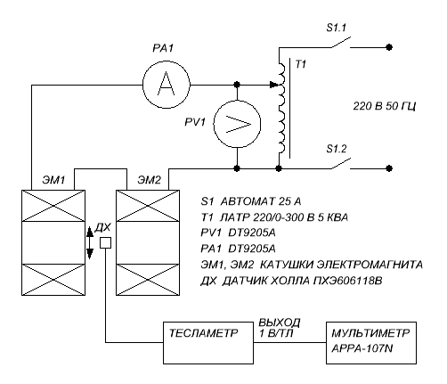
Рис. 4.7. Схема установки для измерения распределения магнитного поля в рабочем зазоре электромагнита при питании переменным током.
Среднее значение магнитной индукции вычислялось для диапазона -15 ... +15 мм (рабочая зона диаметром 30 мм высотой 20 мм). Среднеквадратичное отклонение вычислялось по формуле [7]:
где S(N) - среднеквадратичное отклонение измеряемой величины, N - число отсчетов (N = 7), xi - значение измеряемой величины для i-го отсчета, x - среднее значение измеряемой величины.
Таблица 4.3. Распределение магнитной индукции в рабочем зазоре электромагнита вдоль средней линии зазора. Среднее значение и среднеквадратичное отклонение магнитной индукции в зоне повышенной однородности магнитного поля.
| Расстояние от центра зазора, мм | -20 | -15 | -10 | -5 | 0 | 5 | 10 | 15 | 20 | Среднее значение магнитной индукции на дистанции -15 ... +15 мм, мТл | Среднеквадратичное отклонение магнитной индукции на дистанции -15 ... +15 мм, Тл |
| Магнитная индукция, мТл (переменный ток 5 А частотой 50 Гц) | 64.82 | 64.80 | 64.86 | 64.83 | 64.83 | 64.78 | 64.49 | 64.29 | 64.12 | 64.697 | 0.219 (<1 %) |
| Магнитная индукция, мТл (переменный ток 8 А частотой 50 Гц) | 100.0 | 101.0 | 100.6 | 100.5 | 98.5 | 99.4 | 99.4 | 100.1 | 98.0 | 99.929 | 0.871 (<1 %) |
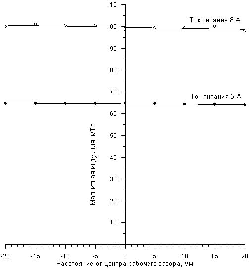
Рис. 4.8. Распределение магнитной индукции в рабочем зазоре электромагнита (по линии вдоль середины зазора).
5. Источники питания
Для возбуждения тока в обмотках электромагнита применимы различные источники питания [19], обеспечивающие на выходе как регулируемое, так и нерегулируемое переменное [11], постоянное [9, 10] или импульсное [3 - 5] напряжение. Питание переменным током частотой 50 Гц можно осуществлять либо непосредственно от достаточно мощной сети переменного тока напряжением 220 В (в повторно-кратковременном режиме), либо через регулируемый автотрансформатор (ЛАТР, рис. 5.1, 5.2), либо через тринисторный регулятор мощности [11] (рис. 5.3). Если частоту питающего тока необходимо изменять, то подойдет частотный преобразователь или генератор сигналов с усилителем мощности [15]. Контролировать величину магнитной индукции в рабочем зазоре электромагнита можно напрямую с помощью тесламетра [2, 12] или измерительной катушки [8], а также косвенным методом по потребляемому току или напряжению питания через калибровочную кривую (рис. 4.5, 4.6), причем метод контроля по напряжению питания несколько менее точный, так как при нагревании обмоток ток и магнитная индукция уменьшаются вследствие увеличения активного сопротивления обмоток.
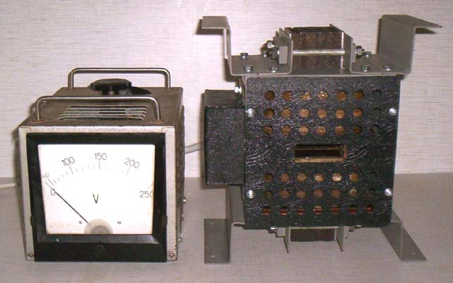
Рис. 5.1. Электромагнит переменного тока в комплекте с регулируемым автотрансформатором мощностью 1 кВА. Ток питания в непрерывном режиме до 4 А, в повторно-кратковременном - до 10 А.
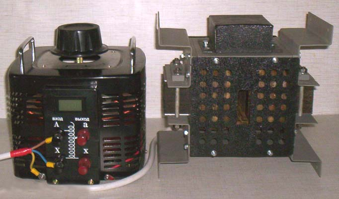
Рис. 5.2. Электромагнит переменного тока в комплекте с регулируемым автотрансформатором мощностью 5 кВА. Ток питания в непрерывном режиме до 8 А, в повторно-кратковременном - до 25 А.
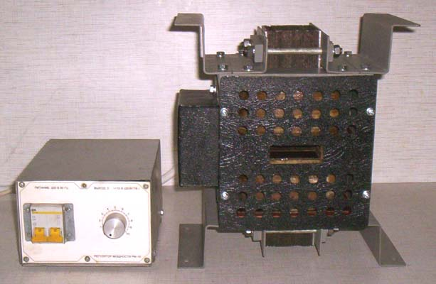
Рис. 5.3. Электромагнит переменного тока в комплекте с однофазным тринисторным регулятором мощности [11].
Ссылки:
23.05.2019
Альтернативные источники
энергии
Компьютеры и
Интернет
Магнитные поля
Механотронные системы
Перспективные
разработки
Электроника и
технология